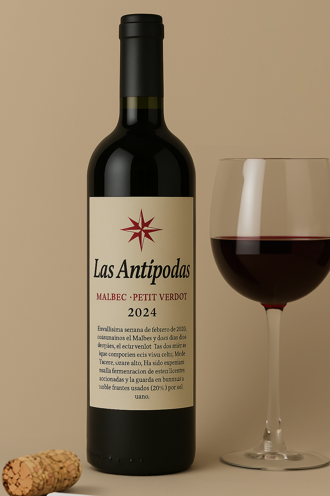

Vino elaborado 100% en Finca Las Antípodas. Este combina las intensas notas frutales del Malbec con la complejidad y estructura del Petit Verdot, ofreciendo una experiencia única y equilibrada. Es un vino que refleja la calidad del terruño de la región y el esmero de la bodega en su elaboración.
Características
- Cata: De color rojo profundo con reflejos violáceos, presenta aromas a frutos negros, especias y un toque de roble. En boca es de cuerpo medio, taninos firmes, fresco y equilibrado.
- Cepa: Malbec & Petit Verdot.
- Año: 2024.
- Región geográfica: Pampa Húmeda.
- Graduación Alcohólica: 13,8°.
Acompañamiento ideal recomendado
Carnes rojas, especialmente asadas o a la parrilla, cordero y quesos curados. También es ideal para platos con especias como carnes marinadas.
Consultar / Comprar